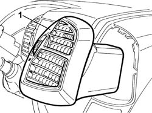

5010C31 CENTRE AIR OUTLET ON FACIA ONE LH OR RH R R
- Path
- Procedures > 50 AUXILIARY UNITS > 5010 HEATING/VENTILATION - MISCELLANEOUS > 5010C AIR OUTLET AND DIFFUSERS > 5010C31 CENTRE AIR OUTLET ON FACIA ONE LH OR RH R R
- Kind
- repair procedure (removal / refitting; the operation number is the code)
- Applies to
- all engines; all production periods
- Interactive page
- https://sloeber94.github.io/elrnDB-fDct/en/#/244001233
Applies to: all engines; all production periods
 Removing
Removing
 Refitting
Refitting1. Using a suitable tool, adjust the inner fastening springs and remove the vent.

Applies to: all engines; all production periods
Refitting
Removing- Place the vent in the housing and insert it.